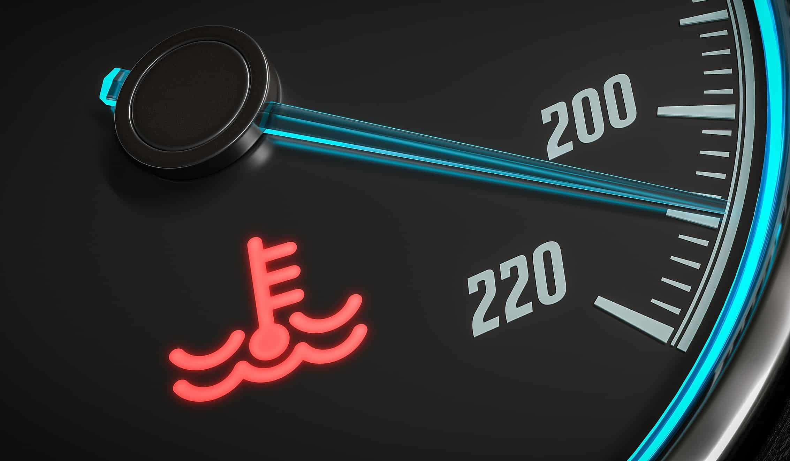
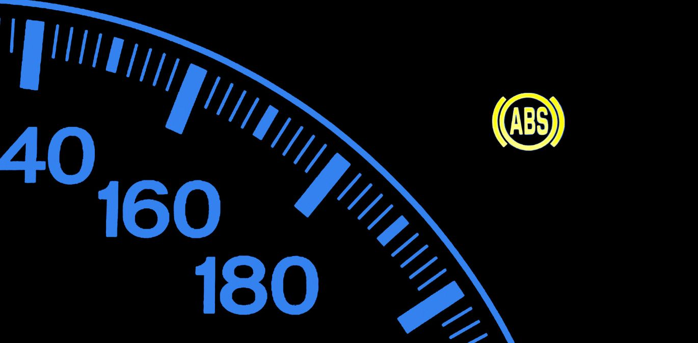

Sabe quando acende uma luz no painel do carro e você não faz ideia do que significa? Dá aquele frio na barriga, né? Parece que o carro está tentando dizer alguma coisa, mas a gente não fala a mesma língua. A boa notícia é: isso tem solução!
Com a informação certa, aquela luz deixa de ser um susto e vira um alerta útil — e é exatamente isso que vamos fazer aqui: transformar o que parece complicado em algo claro e prático, para você usar no dia a dia, com confiança e segurança.
As luzes de painel do carro são sinais importantes que informam ao motorista sobre o funcionamento do veículo. Cada luz tem uma função específica e merece atenção, pois muitas vezes são elas que avisam antes que o problema fique sério.
Dica Prática: Fique sempre de olho nas luzes do painel. Elas são como um “idioma” do carro para te avisar que algo precisa ser verificado. Entender esses sinais pode evitar muita dor de cabeça!
Como você se sente quando vê essa luz misteriosa acender...
2. Luz do Motor (Check Engine)
Uma das luzes mais comuns e importantes é a luz do motor, também conhecida como "Check Engine". Quando essa luz acende, pode indicar um problema no motor ou no sistema de emissões.
Dica Prática: Se a luz do motor acender, é recomendável levar o veículo a um mecânico para diagnóstico, mesmo que o carro esteja funcionando normalmente.
3. Luz de Óleo
A luz de óleo acende quando o nível de óleo do motor está baixo ou quando a pressão do óleo está insuficiente.
Dica Prática: Verifique o nível de óleo imediatamente ao acender a luz. Se o nível estiver baixo, complete com o óleo adequado. Podemos dizer que é uma das luzes mais perigosas do painel e deve ser tratada com urgência.
4. Luz de Temperatura do Motor
A luz de temperatura acende quando o motor está superaquecendo. Isso pode ser causado por problemas no sistema de arrefecimento, como falta de água no radiador ou falha na bomba de água.
Dica Prática: Se essa luz acender, pare o carro imediatamente e deixe o motor esfriar. Verifique o nível de água do radiador e procure um mecânico.

5. Luz de Bateria
A luz da bateria acende quando há um problema no sistema de carregamento do carro, como a falha do alternador ou um cabo solto.
Dica Prática: Se a luz da bateria acender, verifique a fiação e o alternador. Se o problema persistir, procure um profissional para evitar ficar na estrada com a bateria descarregada.
6. Luz de Freio
A luz de freio pode acender por várias razões, como o nível baixo de fluido de freio ou quando o sistema de freios precisa de manutenção.
Dica Prática: Verifique o nível do fluido de freio. Se a luz acender e o freio não estiver funcionando corretamente, leve o carro imediatamente a um mecânico.
7. Luz de ABS
A luz do ABS (Sistema de Antibloqueio de Rodas) acende quando há uma falha nesse sistema, que é responsável por evitar o travamento das rodas durante frenagens bruscas.
Dica Prática: Caso a luz do ABS acenda, verifique o sistema de frenagem o quanto antes para garantir que o sistema esteja funcionando corretamente.

8. Luz de Cinto de Segurança
A luz do cinto de segurança acende quando o motorista ou passageiro não está usando o cinto de segurança. Além de ser uma medida de segurança, é obrigatório por lei.
Dica Prática: Sempre use o cinto de segurança. Se a luz acender, pare o veículo com segurança e coloque o cinto.
9. Luz de Direção Hidráulica
A luz de direção hidráulica acende quando há falha no sistema de direção assistida do veículo, o que pode dificultar a manobra do carro.
Dica Prática: Se essa luz acender, é importante verificar o nível do fluido de direção e procurar um mecânico se necessário.
10. Luz de Airbag
A luz do airbag acende quando há um problema no sistema de segurança do veículo. Isso pode afetar a ativação do airbag em caso de acidente.
Dica Prática: Caso a luz do airbag acenda, leve o carro ao mecânico o mais rápido possível para garantir que o sistema esteja funcionando adequadamente.
Parabéns pela Conclusão do Curso!
Muito bem, você concluiu o curso e agora é hora de testar seu conhecimento. Acerte 50% e obtenha o seu certificado por um valor simbólico para que nos ajude a continuar com esse trabalho que é transformar seu conhecimento.